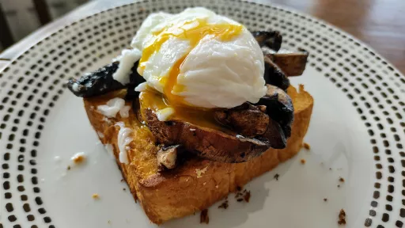

Portobello mushrooms with brioche and a poached egg
25 minsServes 4Vegetarian

As with all dishes which involve eggs and toast and getting ready in the morning, this is all about timing. Ideally, you want the mushrooms and toast coming out of the oven at about the same time, to both be warm, and the eggs poached and ready soon after. Get the mushrooms cooking first, put the bread into the oven halfway through, and then get the eggs poaching. This works as well as a starter late in the day as it does in the morning. Use duck eggs for an extra-rich twist.
Ingredients
400 g Portobello mushrooms, sliced 1 cm thick
75 ml olive oil
2 cloves garlic, crushed
½ tsp ground cinnamon
5 g basil leaves, torn
⅛ tsp chilli flakes, plus extra to serve
4 slices brioche, cut 2 cm thick (about 150 g)
4 large eggs
100 g soured cream, sto serve
flaked sea salt and black pepper
Instructions
Preheat the oven to 220°C fan.
Mix the mushrooms with 3 tablespoons of oil, 1
garlic2 cloves
clove, ¼ teaspoon of
cinnamon½ tsp
, ½ teaspoon of flaked salt and a good grind of pepper. Spread out on a large parchment-lined baking tray and roast for 15 minutes, stirring halfway, until soft and starting to brown. Toss with the basil and set aside.
While the mushrooms are in the oven, mix together the remaining 2 tablespoons of oil with the remaining ¼ teaspoon of
cinnamon½ tsp
, 1
garlic2 cloves
clove, the
chilli flakes⅛ tsp
and ¼ teaspoon of flaked salt. Brush the oil and spices over one side of the
brioche4 slices
slices and place on a separate parchment-lined baking tray, brushed side up. With about 6 or 7 minutes left for the mushrooms, put the bread into the oven alongside the mushrooms and roast until the bread is golden-brown and crisp.
Meanwhile, fill a medium saucepan with plenty of water and bring to the boil on a high heat. Once boiling, reduce the heat to medium high and carefully break in the eggs. Poach for 1½ minutes for a runny yolk (or a little longer for a firmer set).
Divide the
brioche4 slices
between four plates and top each slice with the mushrooms so that they are all ready. Using a slotted spoon, remove the eggs from the water and spoon them on top of the mushrooms. Sprinkle each egg with a pinch of salt and a pinch of